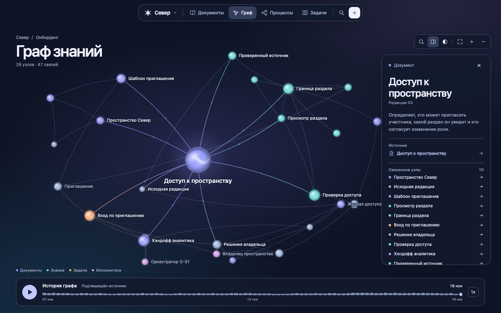
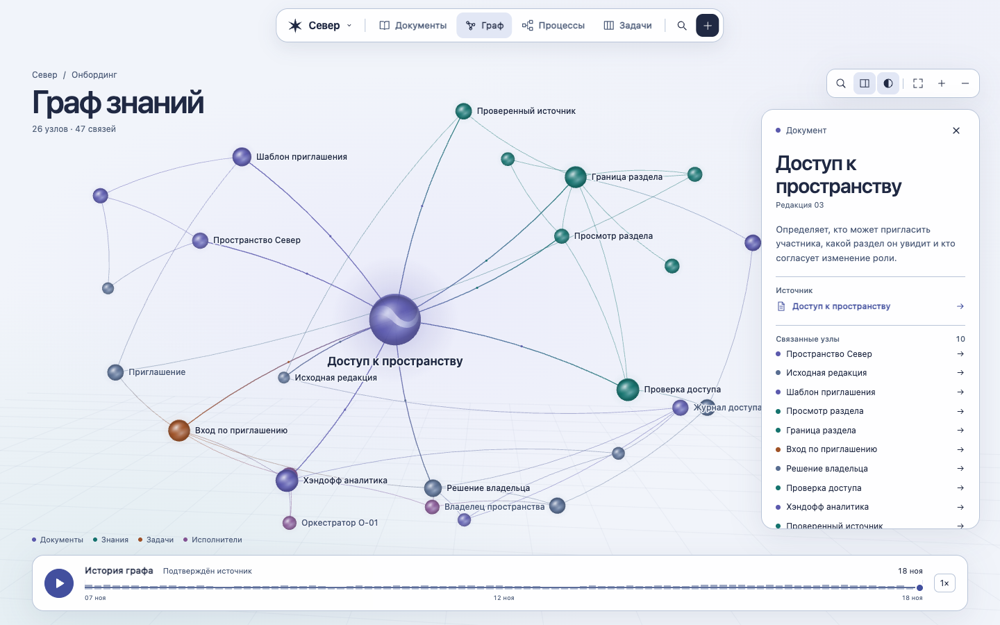

План реализации продукта
Архив предложения о пилоте, сохранён для истории FC-007. Действующий вход в планирование — бэклог микрофич документов и пространств.
Первый результат для команды — владелец заводит задачу, внешний агент получает её через MCP, создаёт Markdown-спецификацию по шаблону и возвращает её на согласование. Владелец видит источник, исполнителя и статус прямо в документе. Следующий участник может найти принятое решение и открыть редакцию, на которой оно основано.
Это предлагаемый пилот для одного пространства и одного процесса «Новая фича». Владелец задал возможности продукта и визуальную основу. Очерёдность ниже предложена для согласования. Обозначения P01–P17 связывают фичи внутри плана. Единственной открытой карточкой текущего реестра остаётся FC-007.
Что проектировать первым
| Порядок | Сценарий для следующего дизайн-ревью | Что решает владелец |
|---|---|---|
| 1. Документы | Пригласить аналитика в раздел, создать дочернюю страницу, найти её по фрагменту текста, выдать просмотр | Устройство дерева, путь до страницы, создание и граница доступа |
| 2. Задача внутри документа | Из спецификации открыть статус задачи, выбрать конкретного агента, получить результат и принять его | Содержимое виджета и инспектора, полномочия человека и агента |
| 3. Конструктор | Собрать шаг аналитика, человеческое согласование, возврат на доработку и два исхода | Порты и переходы, обязательные поля шага, публикация редакции |
| 4. Граф на реальных артефактах | Перейти от принятого факта к абзацу-источнику, посмотреть историю, отозвать доступ и повторить поиск | Типы связей и свидетельства доверия, которые нужно видеть человеку |
Пилот
Позиции P01–P08 обязательны для предложенного пилота. У каждой строки есть наблюдаемый результат приёмки и ведущая роль. Дизайнер подключается к каждому пользовательскому экрану, независимый QA проверяет результат каждого среза.
| Фича | Зависит от | Ведущий | Что должно заработать |
|---|---|---|---|
| P01. Установка и вход | — | Архитектор, бэкенд | Администратор поднимает минимальную микросервисную поставку. Существующий пользователь входит при выключенных SSO и регистрации. Веб-клиент получает разрешённые возможности установки |
| P02. Пространство, разделы и доступ | P01 | Бэкенд | Владелец приглашает человека или выдаёт агенту область доступа. Права чтения и записи проверяются на сервере. Участник одного раздела не видит закрытые материалы соседнего |
| P03. Библиотека Markdown | P02 | Фронтенд и бэкенд | Человек создаёт вложенную страницу по шаблону, редактирует, находит по тексту и открывает конкретную редакцию по ссылке. В поиске действуют права читателя |
| P04. Реестр задач и доска | P02 | Бэкенд и фронтенд | Из существующего реестра определён переносимый контракт. Человек создаёт и назначает задачу себе, агенту или оркестратору. Завершение и отмена различимы, история назначений сохраняется |
| P05. Исполнение одного workflow | P04 | Бэкенд | Запущенная задача привязана к версии процесса. Агент видит свой шаг, владелец может принять результат или вернуть его. Доска отражает разрешённый переход |
| P06. Агент через MCP | P03, P05 | Бэкенд | Внешний агент получает инструкцию и разрешённые источники, пишет спецификацию по шаблону, связывает её с задачей и передаёт на согласование. Виджет в документе показывает тот же статус, что и доска. Повтор запроса сохраняет один результат |
| P07. Происхождение знания и граф | P06 | Бэкенд и фронтенд | События чтения, записи и принятия различимы. Из задачи видны документ, его редакция и источник факта. В графе работает история. После отзыва доступа содержимое и названия закрытых узлов исчезают из выдачи |
| P08. Проверка пилота на команде | P07 | QA и оркестратор | Команда проходит путь «задача → агент → спецификация → решение → источник». Независимый QA проверяет также повтор записи, отмену, возврат, отказ в доступе и выключение модуля. Владелец принимает решение о пилотном выпуске |
Порядок зависимостей. После P02 можно параллельно разрабатывать библиотеку P03 и реестр P04. Процесс P05 строится поверх реестра. Обе ветви нужны для P06. Затем следуют P07 и приёмка P08. Эта последовательность показывает, что блокирует пилот. Календарный критический путь появится после оценки длительностей и доступности исполнителей.
После пилота
| Фича | Зависит от | Приоритет и ведущий | Критерий результата |
|---|---|---|---|
| P09. Конструктор процессов | P05, P06 | Высокий · фронтенд и бэкенд | Владелец собирает новый процесс без кода, назначает роли, входы и выходы, публикует редакцию. Уже начатая задача продолжает работать по своей версии |
| P10. Совместное редактирование и шеринг | P02, P03 | Высокий · фронтенд и бэкенд | Два редактора сохраняют одновременные изменения. Приглашение или ссылка дают заданный уровень доступа. Отзыв действует для открытого документа и новых запросов |
| P11. Поиск контекста и доверие | P06, P07 | Высокий · бэкенд и аналитик | Из пересекающихся источников агент предлагает краткое знание или навык. Выдача содержит источники и редакции. Конфликт попадает человеку, решение видно в истории. Проверяем выдачу на вопросах пилотной команды |
| P12. Корпоративное управление | P01, P02, P05 | Обязательно для корпоративного выпуска · бэкенд | Организация подключает SSO, сочетает роли и атрибуты, проверяет аудит. Независимые флаги входа и модулей действуют в UI и API. Перед отключением видны затронутые пользователи и шаги |
| P13. Масштабирование и эксплуатация | P06, P07, P12 | Обязательно для крупной установки · архитектор и QA | Согласованы профиль людей и MCP-агентов, допустимые задержки и отставание индекса. Проверены пики, отказ реплики, восстановление данных и обновление self-hosted установки. Ориентир — 100 000 потенциальных сотрудников |
| P14. Приложения macOS и Windows | P03, P06, стабильный клиентский API | Обязательно для продукта · фронтенд и релиз | Пользователь скачивает приложение, подключается к своей установке, входит и открывает ту же страницу или задачу. Для обеих ОС проверены установка, обновление и совместимость с сервером |
| P15. Каталог расширений и медиа | P03, P09 | По востребованности пилотом · фронтенд и бэкенд | Включаемые расширения отображают Mermaid, PlantUML, таблицы, изображения и видео. Версии шаблонов, навыков и плагинов связаны с артефактами. Права сохраняются при открытии вложения |
| P16. Продуктовая роадмапа | P04, P05 | Высокий для оркестратора · продакт и фронтенд | Обязательные и дополнительные фичи, владельцы, зависимости и горизонты видны в одном реестре. Блокировки объяснимы. Критический путь считается для оценённых работ |
| P17. Телефон и планшет | P03, P05, обратная связь пилота | Кандидат · дизайнер и продакт | На реальных устройствах проверяем чтение, поиск, согласование и навигацию по графу. По результату владелец определяет состав и формат мобильной поставки |
Порядок запуска
- Следующая работа по FC-007 — аналитик и дизайнер берут сценарий P02–P03. На согласование выносят иерархию одного реального пространства, макет страницы в обеих темах и пример выдачи прав человеку и агенту. Архитектор параллельно уточняет границы P01 и контракты P03/P04.
- До разработки владелец подтверждает требования и макет конкретного среза. Оркестратор переносит согласованный объём в карточки реестра, связывает зависимости и отдельно получает решение о старте реализации.
- Во время разработки разработчики начинают очередной срез с тестов поведения, состояния и сохранения. Оркестратор организует технические переходы и повторную проверку исправлений. QA получает версию, контракт и критерии в чистом контексте.
- При выпуске оркестратор показывает результат сквозного сценария, отчёт QA и открытые ограничения. Релиз согласует владелец. После пилота фактические измерения определят сроки и порядок P09–P17.
Визуальная основа продукта
Эталон — экран графа. Владелец выбрал его тёмную палитру, компактное верхнее меню и контекстную панель справа как основу для следующих экранов. Светлая палитра и материал узла подготовлены к просмотру. Библиотеке документов, задачам и конструктору предстоит отдельное дизайн-ревью.
Сравнивать темы лучше на одном узле «Доступ к пространству». Переключатель в панели графа сохраняет выбор узла, положение камеры и момент истории. Тёмный граф · Светлый граф.


Верхнее меню
Одна плавающая панель по центру окна. Слева — пространство и его меню, в центре — документы, граф, процессы и задачи, справа — поиск и создание. Активная область выделена заливкой и отмечена для экранного диктора. Переключение предметной области сохраняет привычное расположение команд.
Для широкого окна ориентир макета — отступ 12 px сверху, скругление 17 px, тонкая граница и мягкая тень. Ширину определяют команды. На узком экране сохраняются названия областей, поиск и создание. При работе с клавиатурой фокус виден поверх холста, панели и диалога.
Когда открывается правая панель
| Экран | Повод открыть | Что показать | Когда вернуть место |
|---|---|---|---|
| Граф | Выбран узел или открыта прямая ссылка | Тип, название, происхождение, редакция, связанные узлы и переход к источнику | По кнопке закрытия. Камера и выбор сохраняются |
| Документ | Читатель открыл контекст страницы | Оглавление, связанные задачи и факты, доступ. Слева остаётся дерево пространства | При чтении без контекста или редактировании на узком экране |
| Конструктор | Пользователь выбрал шаг или переход и открыл свойства | Роль, вход, выход и условие перехода для выбранного элемента | При работе с компоновкой холста или по команде закрытия |
| Реестр | Открыта конкретная задача | Исполнитель, статус, источник, следующее допустимое действие | После возврата к очереди. Позиция строки и фильтр сохраняются |
Эталон графа использует ширину инспектора 230–315 px. Прокручивается его содержимое. При ширине окна до 760 px сведения открываются по запросу поверх холста. Для будущих экранов это критерий приёмки макета: основная работа должна оставаться доступной после открытия и закрытия панели.
Палитры
| Роль | Тёмная тема | Светлая тема | Применение |
|---|---|---|---|
| Фон рабочей области | #0E1425 |
#F1F4FA |
Пространство вокруг данных |
| Поверхность | #12192D |
#FFFFFF |
Инспектор, меню, поиск и панель истории |
| Основной текст | #EFF0FF |
#202943 |
Названия, основной текст, выбранный объект |
| Вторичный текст | #B2BBDA |
#4C5B78 |
Подписи, происхождение, автор и дата |
| Акцент действия | #C0CAFF |
#424F9E |
Основное действие и выделение |
| Документ | #959AFF |
#5B59AD |
Страница, редакция, шаблон |
| Знание | #6FDDD9 |
#15736E |
Факт, навык, проверенный источник |
| Задача | #FDB07B |
#9F5227 |
Рабочий элемент |
| Исполнитель | #E0A4F4 |
#845392 |
Человек или агент |
| Служебная запись | #9AB3DA |
#586D91 |
Решение или событие |
Светлая тема использует холодный почти белый холст и белые панели. На нём у линий, подписей и типов объектов свои тёмные оттенки. Основной и вторичный текст на сплошной поверхности дают соответственно контраст 15,4:1 и 9,2:1 в тёмной теме, 14,4:1 и 6,8:1 в светлой. Прозрачные поверхности, подписи поверх линий и состояние фокуса дополнительно проверяются на самом экране.
Узлы и движение
Визуальный ориентир для узла — мягкая светящаяся сфера с неоднородным светом внутри. Объём передают градиент, глубина сцены и движение камеры. Выбор заметен по размеру, свечению, названию и карточке. Тип подписан в инспекторе. Это позволяет читать граф также по тексту.
Во время Play внимание остаётся на появлении данных: сначала возникает узел, затем вырастает связь. Пауза останавливает историю в выбранном месте. В режиме уменьшенного движения сохраняются наблюдаемые состояния, дата и ручное управление.
Что передавать дизайнеру
Для следующей фичи достаточно одного сквозного сценария в двух темах. Показать заполненный экран, отсутствие выбора, открытый и закрытый инспектор, переход к источнику и узкое окно. Загрузку, ошибку и отсутствие прав показывать там, где они меняют действие пользователя. Для документов первым проверяется маршрут «раздел → страница → связанная задача».